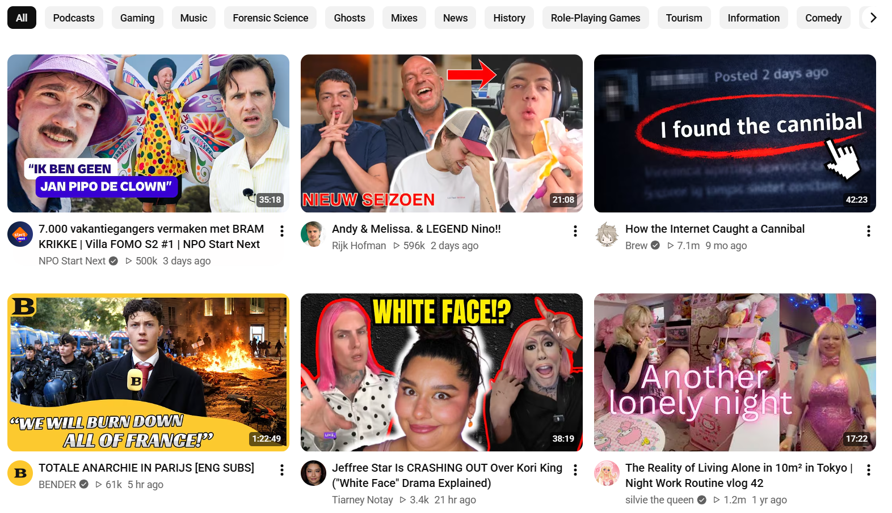

De ideale socialmediafeed
Een ideaal socialmediafeed zou een digitaal overzicht van berichten, video's, entertainment en persoonlijke content samen worden gecombineerd met informatieve en educatieve inhoud. Het doel word dan dat social media niet alleen gebruikt word voor ontspanning, maar ook om naast school en werkuren om kennis op te doen en de wereld te begrijpen door die informatie binnen te krijgen zonder dat je het bewust of onbewust door zal hebben.
Voor veel jongeren zijn TikTok en Instagram een groot deel van hun leven. Door persoonlijke aanbevelingen en korte video's kunnen gebruikers binnen enkele minuten tot grote hoeveelheden content bekijken en delen. Dit komt vooral door algoritmes. Die kiezen er voor welke soort content het meeste en het langst de aandacht van de gebruiker kan vasthouden.
50/50
Het doel is juist NIET om entertainment te vervangen, maar om informatie toegankelijker te maken. Educatieve content hoeft ook niet te bestaan uit alleen documentaires. Ook het maken van korte videos kunnen moeilijke onderwerpen begrijpelijk uitleggen, zolang er voldoende aandach is voor de inhoud en betrouwbaarheid van de informatie.
Voordelen en uitdagingen
Een 50/50 socialmediafeed kan gebruikers stimuleren om nieuwe onderwerpen te ontdekken en bewuster met informatie om te gaan. Wanneer educatieve informatie op dezelfde platformen verschijnt als entertainment, word leren toegankelijker en kan het makkelijker onderdeel worden van het dagelijks leven. Stel je voor je krijgt een feitje per dag. Maar dan is het niet 1 feit, maar meerdere feiten per dag dat je onbewust mee krijgt. Echter zijn er ook uitdagingen. Zoals; niet alle informatie op social media is betrouwbaar. Het kan misleidend of onvolledig zijn. Bovendien heeft niet iedere gebruiker dezelfde interesses. Het zal daarom een uitdaging zijn om een ideale 50/50 verhouding te krijgen voor iedere gebruiker van het web.
Conclusie
Mijn idee laat dus zien hoe bestaande apps en websites anders ingericht kunnen worden. Door gebruikers meer controle te kunnen geven over algoritmes en informatieve content zichtbaarder te maken, kan sociale media en naast ontspanning ook bijdragen aan het verbreden van je kennis. Het uitgangspunt voor het internet hoeft niet alleen ontworpen te zijn om de aandacht van gebruikers vast te houden, maar ook iets te leren. Op die manier ontstaat er een balans tussen creativiteit en contact, terwijl het tegelijkertijd ook meer ruimte bied voor betrouwbare informatie.

Voorbeeld uit mijn eigen YouTube algoritme.